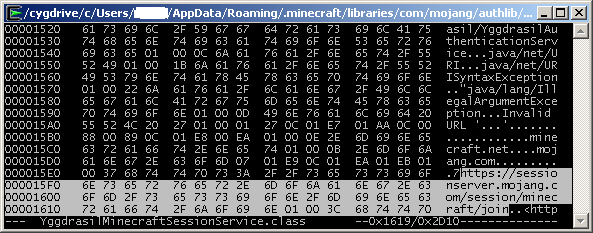
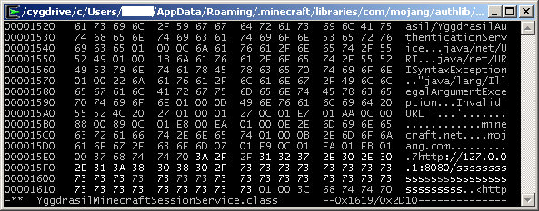

MCBuild is written completely in C, so it's very fast and lightweight. You should be able to run it even on low-end hardware.
MCBuild was written primarily for the Linux platform, but it can be also easily compiled and used on Windows with the help of Cygwin. Unfortunately I cannot offer OSX support due to lack of experience with it. From what I understand it, since OSX has basically a UNIX userland, it should be easily possible to set up necessary tools and libraries to compile and use MCBuild there. I would greatly appreciate if some Mac users could investigate this possibility and test out the installation process.
Building it involves only a few standard tools and libraries, which are easy set up on any Linux distribution or in Cygwin.
In addition, MCBuild is dependent on another library called plainly "libhelper", also eveloped by me. This is a collection of useful functions and macros used in MCBuild heavily. This library will be compiled manually during the installation process.
The sections below specify exact process of installing and configuring MCBuild and its prerequisites on each platform.
Make sure the tools and the libraries in the list below are installed. Everything there should be easily available through your distro's package manager although the package names may vary. In case of the libraries, make sure that the files necessary for the development (header files, etc.) are installed as well, usually you can identify them as the "-devel" packages.
Tools
Libraries
Download and launch the Cygwin installer from their download page
In the package selection window, select following additional packages:
Continue with the install. After it's completed, you can launch the Cygwin terminal and you will be presented with virtually same environment as on Linux - you will have a shell, all necessary development tools - compiler, and so on. The remainder of the installation process is mostly identical for Linux and Windows. For simplicity, I will assume that you install Cygwin (64-bit) at its default path c:\cygwin64
For simplicity sake, we assume all applications and data will reside in the home directory. Under Cygwin, it will be typically located at c:\cygwin64\home\yourusername , on Linux it's ~
Clone and compile libhelper
cd
git clone https://github.com/broese/libhelper.git
cd libhelper
make
Clone and compile MCBuild
cd
git clone https://github.com/broese/mcbuild.git
cd mcbuild
make
If everything went fine, you should now have mcproxy application in that directory (mcproxy.exe on Cygwin) - the actual proxy/client and a couple of other auxiliary applications like mcpdump which we will describe later.
The more difficult part of the process is the setting up your actual Minecraft client. Make sure you read and understand this section completely before attempting to go through this process.
The reason behind the following procedure is the need to intercept the server login process properly. Minecraft uses a 3-way authentication performed between the client, the server, and the Mojang's session server. The proxy process needs to intercept both client->server and client-> session server logins to insert itself properly into connection.
The former is simple - the client will be configured to connect to the proxy anyway. The latter is more difficult, as the Minecraft client uses HTTPS, and while MITM with HTTPS is possible, it's much more difficult to achieve, compared to the braindead Minecraft authentication. Therefore, we want to simplify the things a little bit.
For this we will edit one of the libraries installed with Minecraft, and simply supply a different URL for the session server and point it to our proxy.
If you have just made a clean install of Minecraft on your PC, please launch it at least once normally before continuing, so it will set up all directories and files.
Make sure the client is completely closed (including launcher) before continuing.
All following instructions are using commandline tools. I verified the process on Windows/Cygwin and Linux installations to make sure it works, but you can of course use your prefered tools to manipulate the files in the same way, if you're more comfortable with that.
First, go to directory where the library is located. At the moment of writing, the version was 1.5.21, which is assumed in the following commands. If that library is ever going to be updated, you will need to repeat this process with the newer version. Note that the library itself is not a part of the actual client, so you typically won't need to repeat this process if you simply upgrade the Minecraft version, or install a custom client.
# on Windows/Cygwin:
cd $APPDATA/.minecraft/libraries/com/mojang/authlib/1.5.21/
# on Linux:
cd ~/.minecraft/libraries/com/mojang/authlib/1.5.21/
After that the process is identical for both Linux and Windows/Cygwin. Next, unpack the library and edit the .class file we need.
unzip authlib-1.5.21.jar -d auth
hexedit auth/com/mojang/authlib/yggdrasil/YggdrasilMinecraftSessionService.class
Now we need to locate the URL string in the .class and edit it with the hex editor. To keep things simple, we just overwrite it without changing the total length of the string.
Press <TAB> to switch to the symbol pane
search for:
https://sessionserver.mojang.com/session/minecraft/join
and replace it with:
http://127.0.0.1:8080/sssssssssssssssssssssssssssssssss
The "sssss..." part you see below is just a bogus string - you can write whatever there, just make sure you don't overwrite past the string end.
Note: the '/' key is interpreted as "exit" by the hexedit, so you will have trouble entering this character in the URL. You need to change back to the hex pane with <TAB> and enter the slashes hexadecimally as 2F
Make sure you find the correct string with the "join" in the URL and don't touch other URLs with "profile" and "hasJoined". Make sure you are exactly here:
This is how it should look after editing:
Now just press <F2> to save the file and <Ctrl-X> to exit hexedit
Now we need to backup the original files and repack the jar.
mv authlib-1.5.21.jar authlib-1.5.21.jar.orig
mv authlib-1.5.21.jar.sha authlib-1.5.21.jar.sha.orig
cd auth
zip -r ../authlib-1.5.21.jar *
cd ..
sha1sum authlib-1.5.21.jar | awk '{ print $1 }' > authlib-1.5.21.jar.sha
Now we just need to start mcproxy (see below) and your MC client and configure 127.0.0.1:25565 as a new multiplayer server. This is where you will connect through MCBuild, while the actual remote server is specified through the commandline argument to mcproxy.
If you receive messages "Failed to verify username" when attempting to login - it's a sign that something did not work correctly in this part. Try to restart the MCBuild and the client completely (including the launcher) and if that does not help, check if the library was updated or restored to original version (then you need to patch it again).
Note that with the patched library, you won't be able to login to servers without using MCBuild - as the library will attempt to use or modified URL to access the session server. If you want to use the plain client again, you'll need to restore the original versions of authlib-1.5.21.jar and authlib-1.5.21.jar.sha, so keep a copy of those (that's the *.orig files we created in the prior step).
mcproxy is a commandline application and it spews some debug messages on the terminal, so best way to start it using a terminal (on Windows - the Cygwin terminal).
cd ~
cd mcbuild
./mcproxy
By default, mcproxy will connect to 2b2t.org, you can specify a different server as the argument.
./mcproxy mc.example.com
If the remote server uses a different port from the standard 25565, you can specify it as well:
./mcproxy mc.example.com:12345
By default, mcproxy will listen for connections on all local interfaces, on port 25565. If you want to change that, you can use -b option. For example, it's useful if you want to prevent connections from the local network and limit it to localhost, or if you need to launch it on a different port because you already have a local Minecraft server running there.
./mcproxy -b 127.0.0.1 # listen on localhost:25565
./mcproxy -b 23456 # listen on port 23456
./mcproxy -b 127.0.0.1:23456 # both